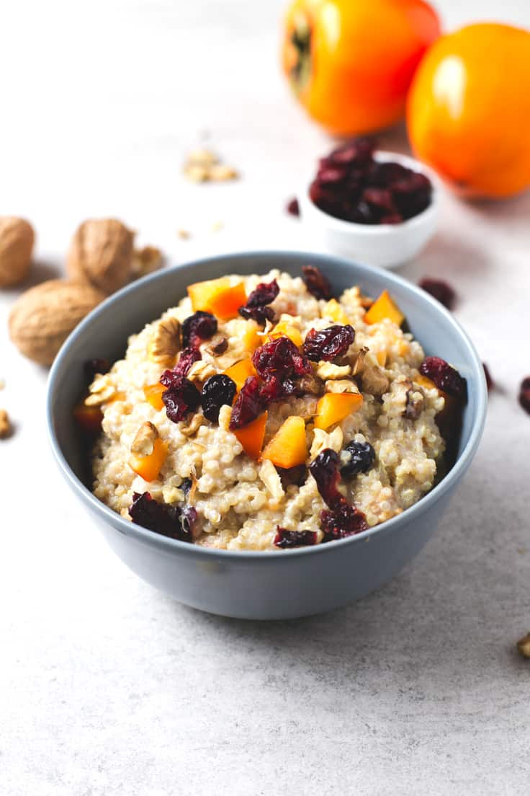

Recetas

Ensalada de Quinoa
Ingredientes
- 1⁄2 tazas de quínoa
- 3 tazas de agua
- 1 taza de arvejitas cocidas (frescas o congeladas)
- 2 cebollines picados en rodajas
- 1 taza de tomates de cóctel en mitades
- 1/4 taza de aceite de oliva
- 2 cucharadas de vinagre de manzana
- Sal y pimienta
- Hojas de lechugas
- 1⁄2 taza de almendras laminadas y tostadas.
Pasos
Preparación:
- Remojar la quinoa y enjuagarla.
- Hervir la quinoa en agua con sal.
- Cocinar tapada a fuego bajo por 10-12 minutos.
- Dejar reposar la quinoa cocida.
- Esponjar la quinoa en un bol para ensalada.
- Agregar arvejas, cebollines, tomates y mezclar.
- Incorporar aceite de oliva, vinagre, sal y pimienta.
- Servir con hojas de lechuga y almendras laminadas.